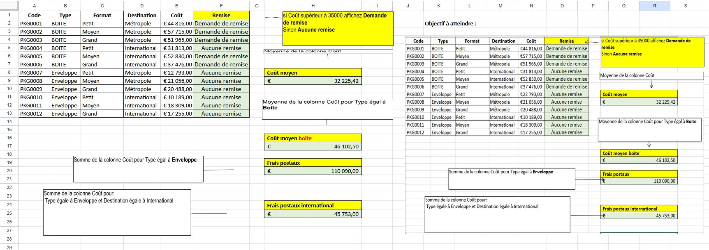
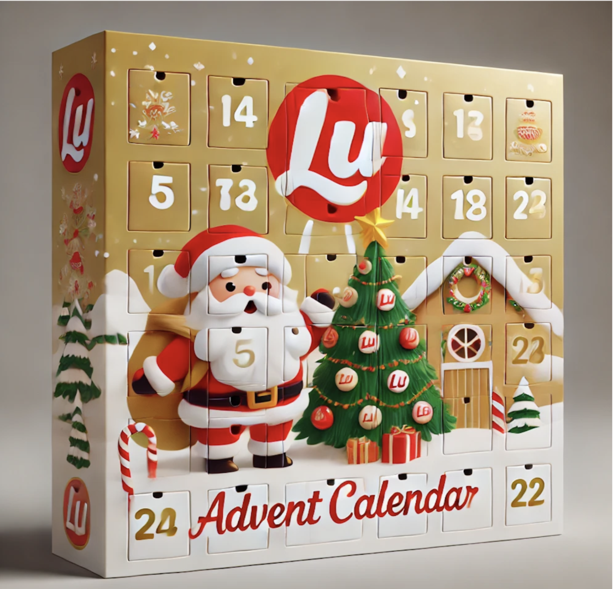
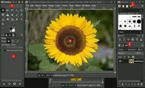
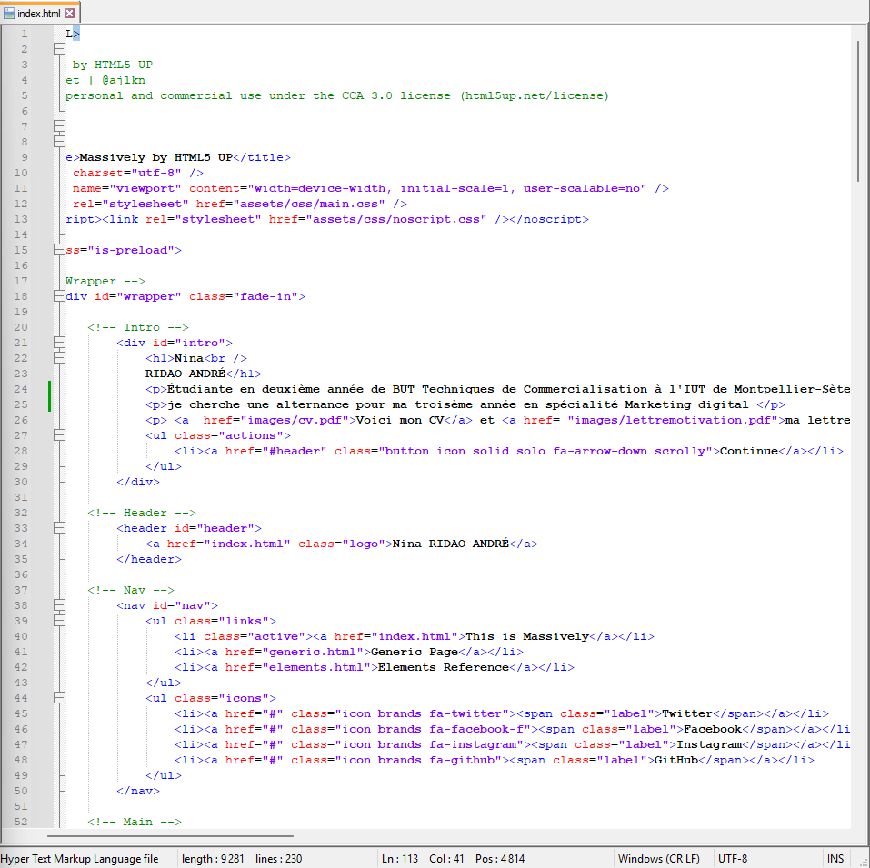
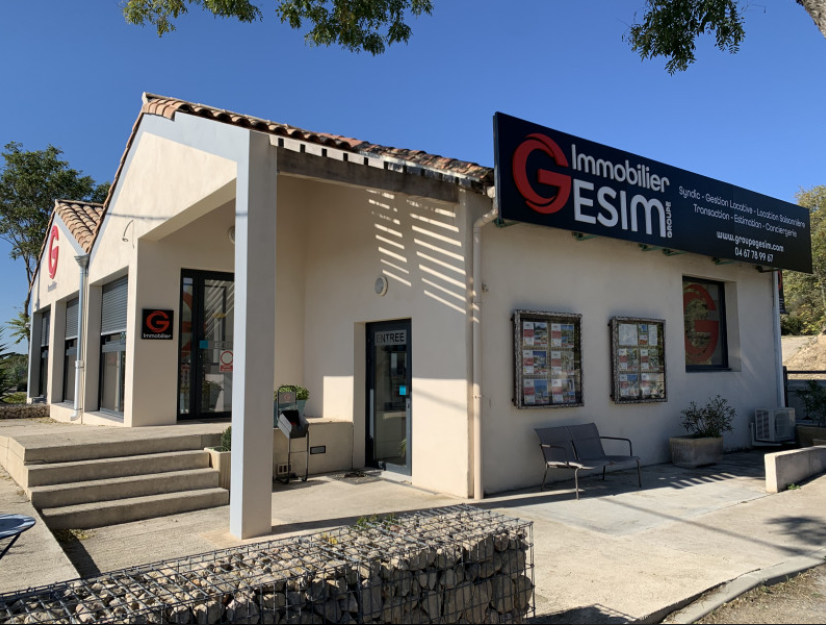
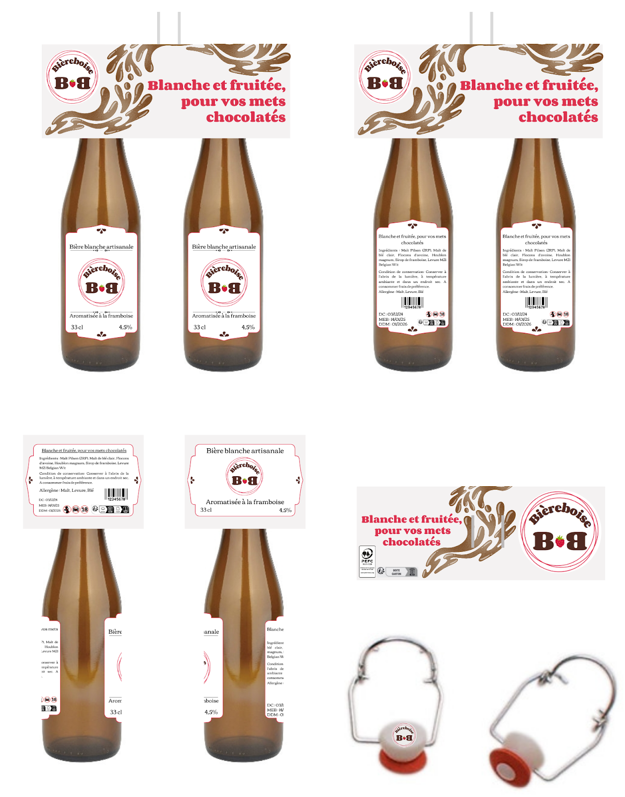

Ma vidéo
Voici maintenant les différentes compétences que j'ai aquisises lors de mes deux années en BUT Techniques de commercialisation : Excel , Canva , Gimp , HTML , ma SAE transverse ainsi que mon stage chez GESIM :

J’utilise régulièrement Excel pour organiser, analyser et interpréter des données de manière efficace. Je maîtrise différentes fonctionnalités telles que les tableaux croisés dynamiques, les formules conditionnelles, les fonctions statistiques (moyennes, écarts, totaux automatisés) ainsi que la mise en forme avancée pour améliorer la lisibilité des informations. J’ai également l’habitude de créer des graphiques et des tableaux structurés afin de visualiser rapidement les résultats d’une analyse.
Cette pratique me permet de développer des compétences essentielles pour ma future vie professionnelle, notamment en gestion et traitement de données, en analyse de coûts, en suivi de performances ou encore en automatisation de tâches répétitives. Grâce à Excel, je suis capable de présenter des informations de manière claire, précise et exploitable, ce qui constitue un atout important dans de nombreux domaines.

J’utilise Canva pour concevoir des visuels professionnels adaptés à différents besoins : affiches, bannières, présentations et contenus destinés au web. Je maîtrise la personnalisation des modèles, la gestion des couleurs et des typographies, ainsi que la mise en page afin de produire des supports cohérents et facilement intégrables dans un projet de communication. Canva me permet ainsi de créer rapidement des visuels attractifs et exploitables dans un contexte professionnel.

Sur GIMP, j’ai réalisé différents travaux de retouche et de création graphique, notamment la modification d’images, l’ajustement des couleurs, le détourage d’éléments et l’utilisation de calques pour composer des visuels plus complexes. Ces manipulations m’ont permis de produire des images optimisées et adaptées à des besoins précis, comme l’intégration dans des projets web ou la création de supports visuels. L’utilisation de GIMP démontre ma capacité à travailler avec un outil de retouche avancé et à proposer des visuels soignés et professionnels.

Dans le cadre de ma formation, j’ai travaillé sur Notepad++ pour apprendre à concevoir et structurer des sites web en utilisant les langages HTML et CSS. J’ai développé plusieurs pages web en respectant l’architecture standard d’un site, en organisant correctement les sections, le contenu et la mise en forme. J’ai également mis en place des liens internes permettant de naviguer facilement d’une page à l’autre, ce qui m’a appris à gérer la structure globale d’un site et son arborescence.
Ce projet m’a conduit à créer un site internet complet en HTML, entièrement codé par moi-même, dans lequel j’ai appliqué différentes notions comme la gestion des images, des paragraphes, des titres, ainsi que la mise en page via du CSS. Cette expérience m’a permis de développer une bonne maîtrise des bases du développement web et de comprendre comment transformer un besoin simple en un site fonctionnel et bien organisé.

Lors de mon stage chez Gesim Immobilier à Sète, j’ai découvert de manière concrète le fonctionnement d’une agence immobilière et la diversité de ses services comme la transaction, la gestion locative ou encore la location saisonnière ce stage m’a offert une vraie immersion professionnelle qui m’a permis de développer mes compétences relationnelles de gagner en confiance et de comprendre ce qui me motive réellement j’ai particulièrement apprécié le dynamisme du métier d’agent immobilier et je me suis aussi intéressée au rôle du notaire cette expérience m’a aidée à mieux définir mes envies professionnelles et à confirmer mon intérêt pour les métiers basés sur l’échange et le conseil.

Dans le cadre de la SAE Transverse où nous avons créé Bièreboise, une bière à la framboise élaborée avec les étudiants de Génie Biologique qui se sont chargés de la fabrication à partir des ingrédients, j’ai pu vivre une expérience de conception complète d’un produit en travaillant sur toute son identité visuelle ce projet m’a beaucoup apporté car j’ai conçu entièrement le packaging en imaginant le design, les couleurs et l’univers graphique pour rendre la bière cohérente et attractive j’ai aussi développé la communication autour du produit en créant les supports visuels, en réfléchissant au positionnement et au message à transmettre pour toucher efficacement notre cible cette SAE m’a permis de renforcer ma créativité, mon sens du détail, ma capacité à collaborer avec d’autres filières et à mener un projet de A à Z comme si nous lancions une véritable bière sur le marché.